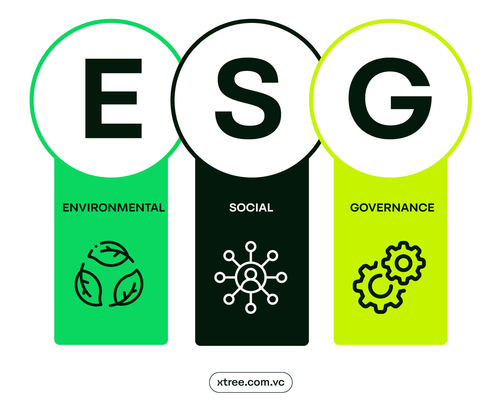
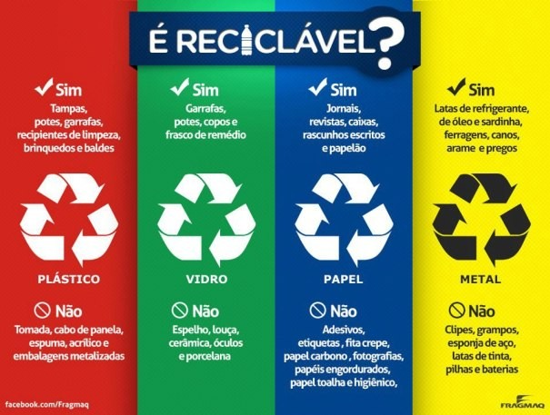

Esg é a abreviação em inglês de “environmental social and governance” sendo um conjunto de critérios usados para medir a sustentabilidade do impacto ético de um investimento em uma empresa. Esses critérios são divididos em três categorias principais:
Ambiental (environmental): Avalia como uma empresa gerencia seus impactos ambientais, incluindo uso de recursos naturais, emissão de gases de efeito estufa, gestão de resíduos, eficiência energética e práticas de sustentabilidade.
Social (social): Examina a relação da empresa com suas partes interessadas, como funcionários, fornecedores, clientes e a comunidade. Inclui questões como condições de trabalho, direitos humanos, diversidade e inclusão, e impacto social.
Governança (governance): Analisa a qualidade da gestão corporativa da empresa, incluindo práticas de governança, transparência, ética, estrutura do conselho de administração, políticas anticorrupção e direitos dos acionistas.
Investidores e empresas estão cada vez mais focados em critérios ESG para avaliar riscos e oportunidades não financeiros que podem influenciar o desempenho financeiro a longo prazo. Além disso, a adoção de práticas ESG pode melhorar a reputação e a resiliência das empresas.
Apesar de ter surgido a mais de uma década, a sigla ESG veio ganhar notoriedade nos últimos anos. O termo foi cunhado em 2004, quando o ex-secretário-geral da onu (kofi annan), escreveu mais de 50 ceos de grandes instituições financeiras, convidando-os a participar de uma iniciativa conjunta sob os apoios financeiros do impacto global da onu e também com o apoio do (international finance corporation) também conhecido como ifc. A proposta era obter respostas dos bancos sobre como integrar os fatores ESG ao mercado de capitais.
O conceito de ESG é norteado por três princípios básicos, ambiental, social e governança.
Para que uma empresa seja considerada sustentável, ela deve cumprir algumas exigências nesse campo, sendo elas:
Além disso, se a empresa possui terras, deve ter uma política voltada para a preservação da biodiversidade nesse espaço.
O pilar social do ESG diz respeito, principalmente, ao cuidado que a empresa tem com o bem-estar dos meu colaboradores.
E, além disso, o pilar social também pode envolver aspectos ligados à relação com fornecedores e com a comunidade na qual a empresa está inserida.
Já a governança é o princípio relacionado à administração do negócio. O ponto principal aqui é entender se a empresa atende aos interesses das várias partes que fazem parte do negócio, como os funcionários, acionistas e clientes. Algumas questões são importantes aqui, como:
Práticas de ESG traz muitas vantagens não só para a empresa, mas para toda a sociedade. Mas focando em empresas e negócios, focado em listar aqui os principais benefícios do ESG:
Obs.: Como resultado, elas se tornam mais sustentáveis e mais admiradas pelo mercado.
A reciclagem é uma forma de reaproveitamento de matéria-prima descartada. Nesse sentido, reciclar significa diminuir a quantidade de resíduos provenientes dos produtos consumidos pelo homem. O termo “reciclagem” é proveniente da língua inglesa no qual “re” significa (repetir) e “cycle” corresponde a (ciclo). Portanto, reciclagem é “repetir o ciclo”.
A Coleta Seletiva é uma estratégia ecológica que visa reciclar a quantidade excessiva de materiais descartados pelo homem.
Os postos de reciclagem realizam serviços de tratamento de resíduos como, por exemplo, a coleta de óleo de cozinha usado. Além disso, a separação do lixo por categorias, dispostos em lixeiras com cores diferentes.
Desde a antiguidade, os povos já reciclavam materiais para evitar o desperdício e economizar recursos. Na Grécia Antiga, por exemplo, as pessoas derretiam e reutilizavam o bronze de estátuas antigas para criar novas obras de arte. Já na Idade Média, os ferreiros reaproveitavam o ferro de armaduras e espadas para produzir novos objetos.
A reciclagem é uma prática antiga, utilizada desde a Idade Média para a produção de papel No século XIX, a reciclagem se expandiu para outros materiais, como vidro e metais A reciclagem ganhou força na década de 1970, com a crescente preocupação ambiental A reciclagem é importante para reduzir a quantidade de lixo enviado para aterros sanitários e para preservar recursos naturais Existem diversos tipos de reciclagem, como a reciclagem mecânica, química e energética A reciclagem também pode gerar empregos e renda para comunidades O Brasil ainda tem muito a avançar na reciclagem, mas já existem iniciativas positivas em diversas regiões do país A conscientização da população é fundamental para o sucesso da reciclagem.
